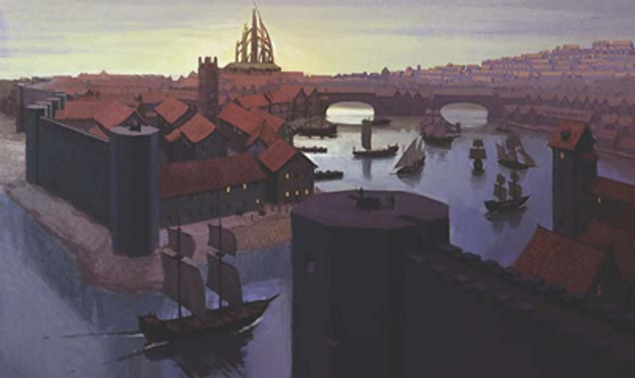

Mulmastre
Ils disent que notre devise est « prend ce que tu peux, quand tu le peux, car qui sait si tu verras le jour se lever demain ». Je préférerais quelque chose d'un peu moins sombre, mais je suis trop occupé à surveiller mes affaires pour penser à quelque chose d'autre maintenant.
- Zor Andrik Gos
Avec les montagnes sur trois côtés et la Mer de Lune sur le quatrième, la ville de Mulmastre est froide et balayée par les vents. Les neiges y sont fréquentes et seuls les riches peuvent se permettre d'avoir de la verdure. Mais dans ce morne paysage se trouve l'une des villes les plus puissantes de la Mer de Lune. Les riches se délectent des avantages de leur poste, tandis que les pauvres souffrent sous la peur de leurs supérieurs et de la tyrannie qui flotte sur l'ensemble des citoyens.
L'histoire de Mulmastre commence en 934 CV, lorsqu'une forteresse fut construite sur la rivière Lis au bout de la route du Nord dans le but de surveiller les flux commerciaux vers et depuis la Mer de Lune et les Vaux. Sous la direction du roi-sorcier Nesker, Mulmastre a ensuite grandi et est devenue un état agressif, jusqu'en 1317 CV quand Nesker a été tué et que la première Haute-Lame, Amdrauth Telsnaer, prit le contrôle de la ville. Amdrauth émis l'édit du Bannissement des Arcanes, rendant la magie des arcanes illégale en ville. Après Amdrauth, Mulmastre verra une succession rapide de Hautes-Lames, chacun prenant le pouvoir à force d'assassinats ou autres circonstances mystérieuses. Ce fut une période de grandes turbulences où s'est jouée une grande partie de ce qu'est la politique et la culture de Mulmastre aujourd'hui.
Passé récent
En 1348 CV, Selfaril Uomdolphin assuma le poste de Haute-Lame. Selfaril était un puissant souverain avec une emprise ferme sur le pouvoir et un frère jumeau mortellement jaloux. Nul ne sait comment, mais en 1368 CV, il se dit que Sefaril fut remplacé par son frère Rassendyll. Que ce soit Rassendyll sous le couvert de Sefaril ou Sefaril lui-même, un pacte fut ensuite forgé avec Fzoul Chembryl pour former une alliance avec le Zhentarim afin de renforcer Mulmastre et de pouvoir s'opposer aux Magiciens rouges du Thay. Cela conduisit à l'avènement de l'Église de Baine à Mulmastre et à une nouvelle répression contre les pratiquants de la magie des arcanes.
L'alliance s'émietta en 1383 CV lorsque Château-Zhentil et la Citadelle du Corbeau furent détruits par les shadovars. Fuyant les pouvoirs du Nétheril, un grand nombre de réfugiés arrivèrent sur les quais de Mulmastre. Refusant d'aider leurs alliés maintenant que l'alliance n'avait plus rien à leur offrir, les Lames de Mulmastre repoussèrent les réfugiés sur un morceau de terre marécageuse à l'extérieur du mur sud, où ils furent lourdement taxés pour avoir droit à une relative sécurité offerte par la ville à proximité. Lorsque Château-Zhentil fut finalement reconstruit après la Magepeste, de nombreux réfugiés retournèrent sur leurs terres ancestrales, mais ils eurent la mauvaise surprise de découvrir rapidement que ceux qui étaient restés les considéraient comme des Mulmastrites et leur ordonnèrent de retourner dans leur ville d'adoption, Mulmastre.
Pendant ce temps, le gouvernement de Mulmastre prit sa forme actuelle. Quarante-neuf nobles familles votent pour déterminer qui est noble et qui ne l'est pas, maintenant toujours le nombre de familles exactement à quarante-neuf. Chaque famille est dirigée par un Seigneur (homme ou femme), et tous les autres membres de la famille sont désignés par le terme Zor (homme) ou Zora (femme). Les Seigneurs élisent seize d'entre eux qui deviennent alors des Lames, et à son tour les Lames élisent la Haute-Lame, qui gouverne la ville. La dernière Haute-Lame est Jasseen Drakehorn, qui se bat pour maintenir son autorité contre les menaces venant aussi bien de l'étranger que de l'intérieur. Jasseen a réaffirmé Baine comme le patron de Mulmastre et a fait construire un mur autour des ghettos zhents, rendant de fait ceux-ci comme faisant partie de la ville, même si officiellement elle ne l'a pas présenté pas comme cela.
SPOILER
Suite à la Tyrannie des Dragons, Phlan a été attaqué par un énorme dragon vert, Vorgansharax, et les habitants ont fui vers Mulmastre dans l'espoir d'y trouver de l'aide.
Mais le plus récent des problèmes de la Haute-Lame est l'afflux de réfugiés en provenance de Phlan. Sur recommandation du Conseil des Lames, Jasseen permit aux réfugiés de Phlan d’accéder aux ghettos plutôt que de les repousser. La noblesse voit ces réfugiés comme une source de main-d'œuvre désespérée mais bon marché qui ne sont pas encore les agitateurs que les réfugiés de Château-Zhentil sont devenus. Pour le moment, les réfugiés de Phlan ont un foyer ; mais pour combien de temps, cela reste à voir.
Mulmastre aujourd'hui
MULMASTRE AUJOURD'HUI
Ce chapitre décrit la ville au début de l'époque du Mal Élémentaire, en 1491 CV.
Les habitants de Mulmastre sont pessimistes quant à leur sort et tentent de surmonter les épreuves avec une détermination farouche. Ils travaillent dur, toujours à la recherche d'une manière d'avancer dans cette ville corrompue. Lorsque vient le temps de se reposer après une journée de travail acharné, ils sont fiers de leur famille et profitent des fêtes, pareilles à des ébats sauvages, qui comprennent de somptueux banquets, des boissons fortes, des duels au sang chaud, des flirts ou des commérages lors des danses, des jeux d'argent à la Porte de Bonne Fortune et des divertissements encore plus sombres qu'on peut trouver dans les recoins sombres de la ville.
La force de Mulmastre réside dans son contrôle du commerce. Située en bout des principales voies terrestres et maritimes qui vont au nord vers la Mer de Lune, elle ne contrôle toutefois pas de fermes et que très peu de terres, mise à part sa précieuse façade sur la mer. Récemment, la Haute-Lame a élargi son influence et récupéré les mines de fer de Pointe de Fer [Iron Point] en y construisant un fort. Cependant, cette ville de 50 000 âmes repose encore sur un fragile équilibre entre différents groupes de pouvoir, un équilibre que les réfugiés de Phlan et les factions cherchent à faire pencher en leur faveur.
Les nobles Seigneurs et les Lames ont le contrôle de la loi et, par extension, en sont à l'abri de la plupart. Ils parlent par le fer et personne, pas même les membres du clergé de Baine, ne peut se mettre en travers. La corruption, l'intimidation, la tyrannie et l'assassinat pur et simple sont les outils de leur métier et ils les utilisent en permanence. Étant donné que la position de la noblesse est mouvante, les familles les plus riches de la classe moyenne sont constamment à l'affût afin de supplanter une famille noble qui amorce son déclin. Quoi qu'il en soit, les Lames maintiennent leur contrôle de la population par la menace que représentent les Capes, les Faucons et les soldats.
Depuis leur Tour des Arcanes, la confrérie des Capes surveille ceux qui pourraient enfreindre la règle de la Haute-Lame. Dans le cadre de l'édit du Bannissement des Arcanes, tous les pratiquants de la magie en ville qui ne sont pas émissaires d'une puissance étrangère (comme ceux de l'ambassade du Thay) sont surveillés de près, et ceux qui utilisent leur magie sont sévèrement punis, à moins qu'ils n'aient rejoint les Capes et juré de protéger la règle de la Haute-Lame contre toutes menaces. On raconte que les Capes fournissent fréquemment une assistance magique à la Garde et à la Soldadesque. Les Ménestrels ont infiltré plusieurs agents parmi les Capes, même si la façon dont ils ont réussi à déjouer les tests magiques de loyauté reste un mystère.
Les Faucons sont la police secrète, un terrifiant épouvantail qui surveille tout ce qui se passe et effectue des raids nocturnes contre ceux qui se laissent aller à des pensées séditieuses, commettent des actes de sabotage ou menacent la stabilité du régime. Les Faucons sont la meilleure des forces de Mulmastre et exécutent les complots secrets des Lames sans jamais être vus. L'Alliance des seigneurs cherche à nouer un pacte avec les Faucons.
La Soldatesque est l'armée et la marine de Mulmaster, une force fière et richement récompensée. Le service militaire est très apprécié parmi les classes moyennes et supérieures, et est considéré comme un moyen de sortir de la pauvreté pour les classes inférieures. Les membres de la Soldatesque prêtent un serment de fidélité et de service qui est le fondement de leur honorable confrérie, et ce groupe doit bien être le seul où la corruption y est extrêmement rare en son sein. L'équité de la Soldatesque est la raison pour laquelle ses membres sont souvent appelés à juger des duels entre personnes de noble naissance. L'ordre du Gantelet cherche à travailler en étroite collaboration avec la Soldatesque.
La Garde est formée par ceux qui ont été considéré comme inaptes à une carrière dans la Soldatesque en raison de leur stupidité, de leur paresse ou d'une nature volatile. Ses membres sont des brutes corrompues qui préfèrent les brutalités et les pots de vin à la justice. Ils sont pour le citoyen lambda plus dangereux que la plupart des criminels, et sont souvent considérés comme sans importance au niveau de politique de la ville.
Les masses vivant dans les ghettos zhents sont des alliés naturels du Zhentarim. Lourdement taxés par la noblesse et abusés par la Garde, ils n'ont personne vers qui se tourner, si ce n'est le Zhentarim, qui contrôlent une grande partie de la criminalité dans la région. Les zhents ont commencé à organiser les travailleurs et la rhétorique favorisant le Zhentarim au détriment des Lames est de plus en plus courante. Bien que n'étant individuellement ni riche ni puissant, c'est une force importante chez les pauvres qui pourrait menacer la puissance des Lames si le Zhentarim décidait de canaliser leur colère contre le reste de la ville.
La religion à Mulmastre
La religion n'est pas un acteur majeur de la vie de l'habitant lambda à Mulmastre. La plupart sont trop égocentriques pour se soucier du sort des autres, ou trop corrompus ou cupides pour envisager de faire don à un temple. Néanmoins, il y a plusieurs temples et sanctuaires dans la Ville de tous les Dangers, même s'ils ne sont généralement pas très ouverts et ne proposent que rarement des services de lanceur de sorts.
Avec le retour de Baine, l'autel du Seigneur Noir a été de nouveau inauguré et sa religion décrétée comme l'officielle en ville. La Haute-Lame elle-même est un paladin de Baine et a été élevée dans son jeune âge par le Haut Percepteur Jorrul Missen. Il n'y a pas de clergé plus puissant en ville, et ceux qui cherchent à se placer dans les cercles sociaux complexes de Mulmastre viennent souvent prier ici.
La Haute Maison de la Douleur [High House of Hurting] et la foi de Loviatar sont extrêmement populaires parmi la noblesse décadente et la jeunesse. Il y a deux décennies, la Haute-Lame ordonna de murer le Palais de la Diversion, fréquenté par les débauchés et les dépravés, sous la Tour du Dracosire. Les prêtres de la déesse de la Douleur ne furent alors que trop heureux de prendre la place du Palais en offrant certains de leurs plus moralement douteux services.
La Haute Salle des Épées sert ceux qui prient au nom de Tempus. Ce dieu est populaire auprès de la Garde et des membres de la Soldatesque. Ceux qui, combattant au nom de la ville, ont été jugés coupables de lâcheté, se retrouveront avec leur tête pourrie empalée sur les pointes qui ornent les remparts du temple.
En tant que temple consacré aux dieux de la magie, il n'est pas surprenant que la Tour des Mystères forme un complexe tentaculaire avec la Tour des Arcanes. La Tour de Mystères comprend de petits temples à Leira, Velsharoon et Savras, ainsi qu'un sanctuaire dédié à Mystra (dont le culte est illégal en ville). Et comme seuls les Capes et les dignitaires en visite sont autorisés à pratiquer la magie à Mulmastre, toute personne entrant dans la Tour des Mystères peut s'attendre à être confrontée à une ou plusieurs Capes exigeants de voir les papiers de l'adorateur. En effet, seuls ceux qui ont officiellement prêté serment de ne pas utiliser la magie des arcanes en ville, sont des dignitaires reconnus, ou sont membres des Capes, peuvent passer. Tout les autres vont devoir se plier à un examen minutieux.
La Porte de la Bonne fortune est à la fois un temple et un casino. Le Seigneur Prêtre Wylan Burral (le frère jovial du taciturne Aleyd Burral, Chevalier du Poing Noir de Phlan) y maintient une petite congrégation. Cependant, le casino est l'une des destinations les plus populaires pour les riches et les désespérés. La prise de risque attire les habitants de Mulmastre, et Tymora se trouve être la seule divinité d'alignement bon qui possède un temple dans la ville.
La Maison en Or a été récemment reconstruite et ré-inaugurée, sous l'initiative des marchands de fer de Mulmastre, dont le chef est le Seigneur Ninyon Gos. La restauration totale de ce temple dédié à Waukyne est toutefois toujours en cours. Mais avec le soutien de la riche noblesse et des guildes d'artisans, il est probable que l'on puisse assister à son achèvement durant l'année. En plus des services religieux, le temple a également ouvert une banque qui offre des prêts plus bas que ceux de la noblesse, et avec moins de risques corporels que ceux disponibles dans les ghettos.
Un sanctuaire pour Lathandre est bâti au sommet d'une colline, du coté sud du Donjon de la Route du Sud, là où les rayons du soleil frappe en premier l'ombre sur les murs de la ville. Ce sanctuaire un peu délaissé n'est fréquenté que par les pauvres qui viennent demander à Lathandre de briller sur eux, ainsi que par ceux qui quittent la ville pour voyager vers le sud.
A l'opposé du sanctuaire de Lathandre, au nord du Donjon de la Route du Sud, se trouve une cabane lugubre avec de nombreuses griffes de prédateurs et ailes d'oiseaux de proie clouées sur ses murs en piteux état. Ceux qui chassent dans les montagnes s'arrêtent ici pour honorer Malar, le Seigneur des Bêtes. Mais mis à part lorsque s'y trouvent des chasseurs occasionnels, ce sanctuaire est généralement vide.
Le sanctuaire de Mask donne ouvertement sur la rue, et n'est pas donc pas caché comme l'on pourrait s'y attendre. Les habitants vénèrent Mask en tant que roi de la ruse, celui qui a toujours un coup d'avance de par son esprit et ses compétences, et qui ne se résigne pas à son sort. Le sanctuaire ressemble à une silhouette qui possède deux visages encapuchonnés et masqués, et fait 3,50 mètres de haut. Une face représente un homme, l'autre une femme. Les fidèles entrent d'un côté en tirant le « bras » correspondant de la forme, passant par celui-ci, et sortent de l'autre côté. La coutume veut que les fidèles doivent être masqués et costumés lorsqu'ils entrent, et doivent échanger masque et costume avant de sortir. Ainsi, en théorie, personne ne sait qui est entré dans le sanctuaire. Il y a toujours plus d'une douzaine de costumes à l'intérieur du sanctuaire, et des adeptes se relaient pour les réparer ou les remplacer.
Le sanctuaire de Talos est sur la côte rocheuse battue par la tempête, à l'extérieur des murs de la ville. Ceux qui veulent louer le dieu de la tempête posent un morceau de bois sur une imposante pile précaire qui est embrasée à la fin de chaque mois. Escalader cette pile précaire avant qu'elle ne s'enflamme ou danser tout près autour lorsqu'elle a prit feu sont des moyens communs de montrer sa foi.
Le sanctuaire d'Umberlie se trouve sur un pont dont la balustrade porte le visage sculptée d'une femme furieuse et duquel la rivière Lis s'écoule par sa bouche béante pour finir dans les eaux aux-dessous. Le sanctuaire est appelé la Dernière Goutte, et il est de coutume à Mulmastre de se sacrifier pour la Reine Garce en plongeant depuis celui-ci. Le lieu est entretenu par la Lisseuses des Tempêtes Rydah, et est populaire auprès des marins et des membres de la marine de la Soldatesque. Sa congrégation est la plus grande de tous les sanctuaires, et pourrait bientôt atteindre le statut de temple.

Écrit par Greg Marks, traduit par blueace